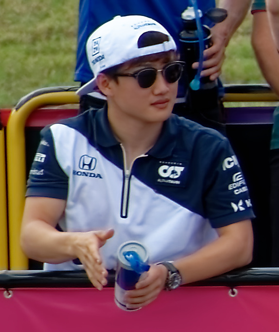
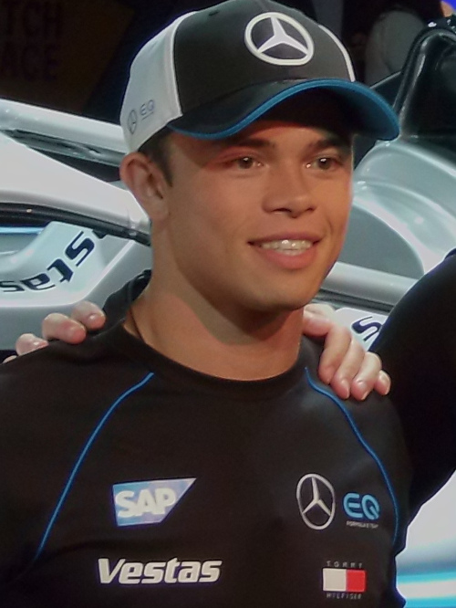

História
A Scuderia AlphaTauri, comumente conhecida como AlphaTauri, é uma equipe e construtor de Fórmula 1 com sede em Faença, na Itália. É uma das duas equipes de Fórmula 1 de propriedade da empresa austríaca de bebidas energéticas Red Bull, a outra sendo a Red Bull Racing. A equipe foi formada, para a disputa da temporada de 2020, após a renomeação da antiga Scuderia Toro Rosso, o nome é derivado da marca de moda da Red Bull, a AlphaTauri.
De acordo com Franz Tost e Helmut Marko, a Scuderia AlphaTauri não é uma equipe júnior, mas sim uma equipe irmã da Red Bull Racing. A Scuderia AlphaTauri é a terceira equipe a promover uma marca de moda de roupas como construtor da Fórmula 1, depois da Benetton Formula que participou entre 1986 e 2001, antes de ser vendida para a Renault e, da Andrea Moda Formula que participou sem sucesso em 1992.
Pilotos
-
Yuki Tsunoda
- Nacionalidade: Japão
- Idade: 23 anos
- Corridas: 53
- Vitórias: 0
- Pódios: 0
- Campeão: 0 vez
-
Nyck De Vries
- Nacionalidade: Holanda
- Idade: 28 anos
- Corridas: 10
- Vitórias: 0
- Pódios: 0
- Campeão: 0 vez
*Dados do dia 26/06/2023